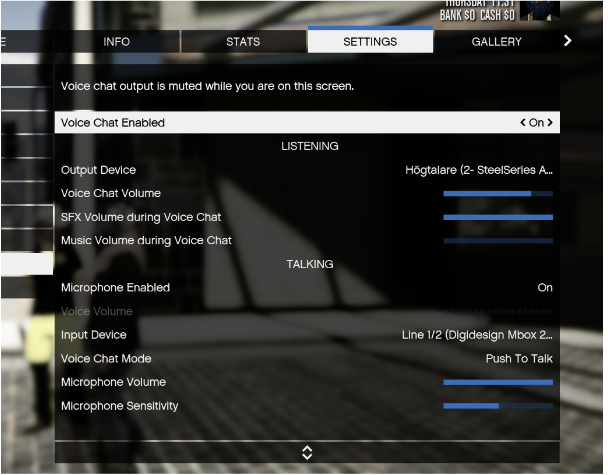

Vi är en svensk FiveM rollspelsserver med fokus på det sociala rollspelet. Tjuv och Polis i all ära såklart, men vi anser att rollspelet blir roligare om man spelar med varandra och inte mot varandra.
Teamet bakom servern har många års erfarenhet av rollspel och såg behovet av att öppna upp något nytt som inte följer samma mall som alla andra servrar. Våra utvecklare jobbar hårt med att uppnå precis detta och vi kan stolt säga att vår server skiljer sig från mängden.
Här finner ni inget Pay2Win eller krav på att köpa sig till roller, utan vi fokuserar på spelarna och strävar efter att rollspel ska vara nånting vi gör tillsammans.
Du ansöker lättast till Civitas genom att öppna en ticket på vår Discord! Läs igenom de kanaler du ser och sedan använd #wl-ticket för att ansöka till oss.
Se till att läsa igenom #information innan ni öppnar en ticket!
Vi svarar så fort vi kan och vi ser verkligen fram emot att rollspela tillsammans med er.
IP-adressen till Civitas är:
play.civitasrp.se
Civitas är online 24/7. Ibland kan FiveM visa att servern är offline men ingen panik, ni kan lättast ansluta med F8-knappen och skriva:
connect play.civitasrp.se
Vid eventuella problem så skrivs alltid status ut i Civitas Discord!
Vi har en rad olika jobb på servern. Vi har så kallade "icke whitelistade jobb" som vem som helst kan gå till arbetsförmedligen och få en anställning hos.
* Sopgubbbe för stadens soptipp. Vill du hjälpa till att hålla staden ren och fin? Då är detta jobbet för dig!
* Kock på Knubbiga Gazton. Har du en talang för att laga tacos och annan mexikans mat? Då är Knubbiga Gazton stället för dig!
* Foodora. Vill du leverar mat ut till stadens alla gatuhörn? Ingen invånare ska gå hungrig när du kommer farandes med varm mat genom stan!
* Uber. Är du social? Älskar du att köra bil? Då är detta jobbet för dig. Du kan använda din egna bil eller låna en av företaget. Uber finns där för dig!
Vi har även "whitelistade jobb" där du ansöker om att bli anställd hos företaget via en chef eller personalansvarig. Det är upp till den ansvariga att bedömma om du får jobbet eller ej.
* Polis på Polismyndigheten. Brinner du för att spärra in bovar? Löser du stora mordgåtor snabbare än blixten? Då kanske polisyrket är något för dig!
* Sjukvårdare på Centralsjukhuset. Är du utbildad läkare, sjuksköterska, kirurg, vetrinär eller ambulansförare? Tveka inte att söka dig till Centralsjukhuset då!
* Mekaniker på Mekonomen. Kan du allt om bilar eller vill du lära dig? Då är Mekonomen platsen för dig!
* Chafför på DHL. Är du stor och stark och klarar du att leverera paket och post till hela staden? Då är DHL stället för dig!
* Event & Hotellpersonal på Vanilla Unicorn. Är du kreativ? En festprisse med många ideér? Har du en utbildning inom hotell och resturang? Trivs du med ge den bästa servicen till människor? Då är Vanilla Unicorn för dig!
Absolut!
Det lättaste är att göra en ticket på vår Discord om ni vill komma i kontakt med oss snabbt. Vi svarar så snabbt vi bara kan på alla frågor ni kan ha om servern.
Detta är en väldigt enkel process. Vi listar stegen här till dig så du enkelt kan följa med.
1. Tryck på ESC-knappen i spelet. Välj "Settings" och gå till "Voice chat".
2. Se till att "Voice chat enabled" står på "on".
3. På "Output device" väljer du dina hörlurar.
4. "Voice Chat Volume" är hur högt du hör andra. Ställ in denna efter vad som passar dina öron.
5. "SFX Volume during Voice Chat " ändrar hur mycket av backgrundsljud i spelet du hör (t.ex. bilar, vapen, fåglar, vatten osv) när en annan spelare pratar. Vi rekommenderar att ha denna på max.
6. "Music Volume during Voice chat" är om du vill att musiken i fordon ska sänkas när en annan spelare pratar. Har du stängt av musiken i fordorn så spelar denna inte så stor roll.
Nu går vi över till "TALKING"-delen i inställningarna.
7. Se till att "Microphone Enabled" är satt till "On" annars kommer vi inte höra dig!
8. På "Input Device" väljer du din mikrofon som du vill använda.
9. På "Voice Chat Mode" väljer du "Push To Talk". Du kan ändra vilken knapp du använder för att prata i dina keybinds senare.
10. "Microphone Volume" är hur högt andra spelare hör dig. Börja gärna med denna på max och prata lite med folk runt om i staden. Skulle det var så att du är väldig hög så sänk denna lite.
11. Sist men inte minst. "Microphone Sensitivity" är känsligheten på din mikrofon. Denna får man själv ställa in efter vad som verkar ok för just din mikrofon. Vissa har den på max andra runt 50%. Testa dig fram och hitta det som funkar bäst.
Om du har gjort allt korrekt så borde dina inställningar se ut något i stil med detta:
Det finns väldigt många knappar hos oss att hålla redo på. Vi försöker lista dom viktigaste här. Tänk på att i stort sätt så går nästan alla att ändra efter ert behag. Ni kan själva ändra detta i "Settings" och sen välja "Keybinds" och gå till "FiveM".
ALT - är knappen för att få upp det så kallade "ögat" som du använder för att interagera med saker i vår stad.
TAB - så får du upp ditt inventory.
F1 - är knappen för att få upp vårt hjul med användbara funktioner. Här hittar du det mesta du behöver för t.ex. dina fordon eller för att utföra ditt jobb.
F5 - för att få upp alla animationer som finns tillgängliga.
LEFT CTRL - är knappen för att huka dig eller ducka. Det finns två lägen för detta.
RIGHT CTRL - är knappen för att lägga dig ner. Du kan även lägga dig på rygg genom att trycka på SPACE. Använd RIGHT CTRL för att resa dig igen.
M - så får du upp telefonen.
Y - aktiverar farthållaren i ett fordon.
B - tar du av och på ditt bälte i ett fordon.
B - för att peka om du inte är i fordon.
U - för att gå in i "ragdoll"-mode. Vilket gör din kropp faller ihop på marken.
X - för att ta upp händerna eller avbryta en pågående animation.
ESC - för att avbryta t.ex. animationer där du även har en progressbar framme.